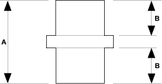

Standards and Service Limits
|
2-16 |
| Item | Measurement | Qualification | Standard or New | Service Limit |
| Mainshaft 4th and 5th gears spacer collar | I.D. | 29.002-29.012 mm
(1.1418-1.1422 in.) |
29.060 mm
(1.1441 in.) |
|
| O.D. | 34.989-35.000 mm
(1.3775-1.3780 in.) |
34.930 mm
(1.3752 in.) |
||
| Length
 |
A | 51.97-52.03 mm
(2.046-2.048 in.) |
- | |
| B | 24.03-24.06 mm
(0.946-0.947 in.) |
- | ||
| Reverse idler gear | I.D. | 15.016-15.043 mm
(0.5912-0.5922 in.) |
15.080 mm
(0.5937 in.) |
|
| Gear-to-reverse gear shaft clearance | 0.032-0.077 mm
(0.0012-0.0030 in.) |
0.140 mm
(0.0055 in.) |
||
| Synchro ring | Ring-to-gear clearance | Ring pushed against gear | 0.85-1.10 mm
(0.033-0.043 in.) |
0.4 mm
(0.016 in.) |
| Dual cone synchro | Outer synchro ring-to-synchro cone clearance | Ring pushed against gear | 0.5-1.0 mm
(0.02-0.04 in.) |
0.3 mm
(0.01 in.) |
| Synchro cone-to-gear clearance | Ring pushed against gear | 0.5-1.0 mm
(0.02-0.04 in.) |
0.3 mm
(0.01 in.) |
|
| Outer synchro ring-to-gear cone clearance | Ring pushed against gear | 0.95-1.68 mm
(0.037-0.066 in.) |
0.6 mm
(0.02 in.) |
|
| Shift fork | Finger thickness | 1st-2nd and 3rd-4th forks | 7.4-7.6 mm
(0.29-0.30 in.) |
- |
| 5th fork | 6.7-6.9 mm
(0.26-0.27 in.) |
- | ||
| Fork-to-synchro sleeve clearance | 0.35-0.65 mm
(0.014-0.026 in.) |
1.00 mm
(0.039 in.) |
||
| Reverse shift fork | Pawl groove width | 13.8-14.1 mm
(0.543-0.555 in.) |
15.5 mm
(0.610 in.) |
|
| Fork-to-reverse idler gear clearance | 1.6-2.2 mm
(0.06-0.09 in.) |
2.8 mm
(0.11 in.) |
||
| Shift arm | I.D. | 13.973-14.000 mm
(0.5501-0.5512 in.) |
- | |
| Shift fork diameter at contact area | 12.9-13.0 mm
(0.508-0.512 in.) |
- | ||
| Shift arm-to-shift lever clearance | 0.2-0.5 mm
(0.008-0.020 in.) |
0.62 mm
(0.024 in.) |
||
| Select lever | Finger width | 14.75-14.95 mm
(0.581-0.589 in.) |
- | |
| Shift lever | Shaft-to-select lever clearance | 0.05-0.40 mm
(0.002-0.016 in.) |
0.6 mm
(0.024 in.) |
|
| Groove (to select lever) | 15.00-15.15 mm
(0.591-0.596 in.) |
- | ||
| Shaft-to-shift arm clearance | 0.013-0.07 mm
(0.0005-0.003 in.) |
0.1 mm
(0.004 in.) |
||
| M/T differential carrier | Pinion shaft contact area I.D. | 18.010-18.028 mm
(0.7091-0.7098 in.) |
- | |
| Carrier-to-pinion shaft clearance | 0.027-0.057 mm
(0.0011-0.0022 in.) |
0.100 mm
(0.0039 in.) |
||
| Driveshaft contact area I.D. | 26.025-26.045 mm
(1.0246-1.0254 in.) |
- | ||
| M/T differential pinion gear | Backlash | 0.05-0.15 mm
(0.002-0.006 in.) |
- | |
| I.D. | 18.042-18.066 mm
(0.7103-0.7113 in.) |
- | ||
| Pinion gear-to-pinion shaft clearance | 0.059-0.095 mm
(0.0023-0.0037 in.) |
0.150 mm
(0.0059 in.) |